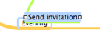
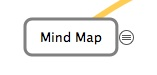

Benutzerhandbuch
Neue Knoten erzeugen
MindNode bietet zahlreiche Möglichkeiten, einen neue Knoten zu erzeugen. Die vielleicht einfachste ist das Herausziehen von neuen Knoten aus der Knotenquelle (dies ist das eingeringelte Pluszeichen, das neben einem Knoten erscheint sobald man den Mauszeiger über diesen bewegt). Daneben gibt es auch Tastatur-Kurzbefehle, die das schnelle Erzeugen von neuen Knoten beispielsweise bei Brainstorming-Sessions erlauben. Diese können in den Programm-Einstellungen auch sehr einfach den persönlichen Vorlieben angepasst werden.
Knotenweite beschränken
MindNode Pro bietet zwei verschiedene Einstellungen, um die Knotenweite zu beschränken:
Weite wächst mit: In diesem Modus wächst die Knotengröße automatisch bis zu einem angegebenen Wert.
Feste Weite: Knoten habe eine feste Weite und verändern ihre Größe nicht automatisch.
Hinweise
- Die Weite eines Knoten kann sehr einfach direkt auf der Zeichenfläche mit einem der beiden Vergrößerungsgriffe verändert werden (diese Griffe erscheinen nur, wenn ein Knoten selektiert ist).
- Ein Doppelklick auf einen der beiden Griffe zum Verändern der Größe ändert die aktuelle Knotenbeschränkung.
Pro: Bilder und Datei-Verknüpfung
Bilder und Dateiverknüpfungen werden in MindNode Pro mittels Drag-and-Drop erstellt. Dazu einfach das Bild oder die Datei direkt auf die Zeichenfläche ziehen.
Datei-Verknüpfungen werden durch ein Linksymbol angedeutet. Durch das Klicken dieses Symbols oder durch einen Doppelklick auf die Datei-Repräsentation wird die Datei geöffnet.
Pro: Neuverbinden von Knoten
Manchmal ist es wichtig, einen Knoten von einem Zweig zu einem anderen zu bewegen. MindNode Pro macht diese Aufgabe sehr leicht. Man zieht einfach den Knoten über einen anderen Knoten und lässt ihn dort fallen.

MindNode Pro erlaubt es auch, das Neuverbinden und das Neuanordnen in einem einzigen Schritt zu bewerkstelligen: Dazu den gewünschten Knoten über einen anderen Knoten bewegen (ein Fokusindikator erscheint), kurz warten bis der Indikator blinkt und dann den Knoten an seine neue Position bewegen.
Hinweise
- Drückt man die Leertaste, während man einen Knoten über einen anderen bewegt, werden die beiden Knoten sofort neu verbunden.
- Drückt man Option (Alt) während dem Neuverbinden, wird der Stil des Überknoten an seine neuen Unterknoten vererbt.
- Hat man unabsichtlich einen Knoten neuverbunden, kann die Operation mit Esc abgebrochen werden.
Pro: Querverbindungen von Knoten
MindNode Pro erlaubt es eine Querverbindung zwischen zwei beliebigen Knoten auf der Zeichenfläche zu erstellen.
Der einfachste Weg eine Verbindung zwischen zwei Knoten zu erstellen ist es bei gedrückter Umschalttaste auf einen Knoten zu klicken und bei gehaltenem Maus-Knopf eine Verbindung zum Zielknoten zu ziehen.
Pro: Knoten einfalten
In MindeNode Pro wird die Knotenquelle auch für das Ein- und Ausfalten von Knoten verwendet. Drückt man Option (Alt), verwandelt sich das Pluszeichen in das Falten-Icon und ein einfacher Klick faltet oder entfaltet die Unterknoten.

Pro: Links erstellen
Um einen Link zu erstellen, muss man einen Knoten zuerst in den Editiermodus setzen (Doppelklick auf den Knoten). Danach selektiert man den betreffenden Text, den man mit einem Link versehen möchte, und öffnet den Link-Bereich im Inspektor. Durch das Aktivieren von "Als Link aktivieren" wird der Text als Link aktiviert und man kann im Textfeld den Link eingeben.
Einen Link entfernt man, indem man den verlinkten Text eines Knoten selektiert und das Markierungsfeld "Als Link aktivieren" ausschalten.
Hinweise
- Wenn die Option "Intelligente Links" in den Programm-Einstellungen aktiviert ist, versucht das Programm automatisch Links im eingegebenen Text zu finden.
Pro: iPhone Übertragung
MindNode Pro erlaubt über W-Lan (Bonjour) den Import und Export von MindNode (touch Dokumenten. Um Dokumente auszutauschen:
1. Den "Dokument Austausch" Bildschirm in MindNode (touch) aufrufen: Symbol in der linken unteren Ecke des Hauptbildschirms.
2. In MindNode Pro das "iPhone Übertragung" Fenster öffnen: Ablage > iPhone Übertragung...
3. Das gewünschte Gerät in der Liste auswählen.
4. Die Verbindung auf dem mobilen Gerät bestätigen.
5. Ein Dokument auf dem Gerät oder ein lokal geöffnetes Dokument auswählen um es von oder zu dem Gerät zu transferieren.
Der Datenaustausch funktioniert nur richtig wenn sich Ihr Mac und Ihr mobiles Gerät im selben W-Lan Netzwerk befinden.